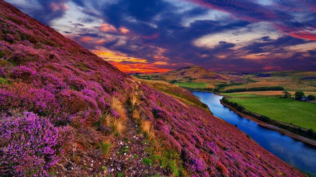
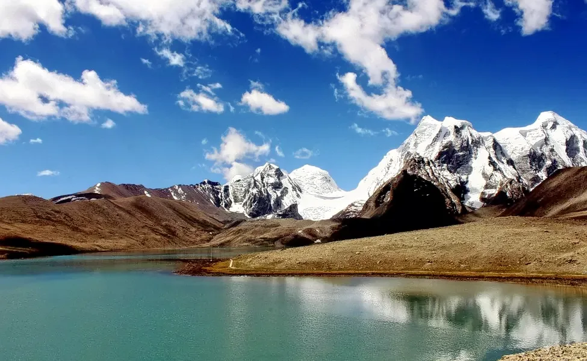
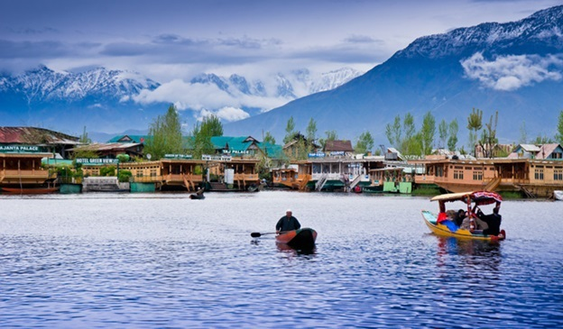
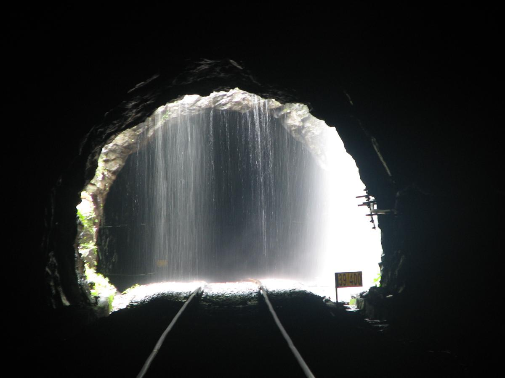
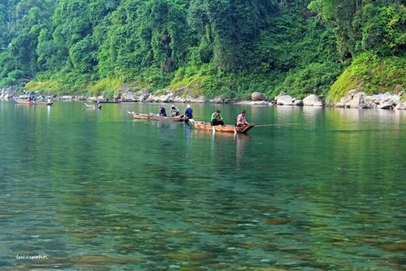

SundayHome 🏠
Nature Places in India
That are Surrogate of Heaven
1.Valley Of Flowers, Uttarakhand

Can you imagine an expansive land covered in the vibrant hues of
flowers? We see it only in fairy tales, isn't it? But to apprise you,
India boasts a Valley of Flowers in Uttarakhand which is next to heaven.
Without question one of the most beautiful natural attractions in India,
this ethereal valley is located in the Nanda Devi Biosphere. This
nature-blessed place in India is blessed with medicinal herbs as well as
different types of flora. According to local beliefs, the valley of
flowers has a connection with Lord Hanuman which is why it is also
spiritually significant for the natives.
2. Gurudongmar Lake, Sikkim

Surrounded by snow-clad mountains and glaciers, the Gurudongmar Lake in
Sikkim is famous for breathtaking views along with sparkling and icy
water that has curative properties. Named after the founder of Tibetan
Buddhism - Guru Rinpoche, this pristine lake is considered to be sacred
by Buddhists, Sikhs, and Hindus. One of the virgin, less explored
attractions of Sikkim, visiting Gurudongmar Lake is about exploring
religious aspects, scenic beauty, and enduring treks all together at the
same time. Discover the bewildering facts about this sanctified lake
which sits beautifully at an altitude of 5425 m close to the Tibetan
border.
3. Snow Valley, Kashmir

How can we ignore Kashmir when talking about the best natural places in
India? This natural paradise on earth is one of the best places for
nature lovers in India. Lavishly sprawled between the Karakoram range
and Pir Panjal range, Kashmir is an eternally beautiful place with far
too many things to offer. From sightseeing to admiring its pristine
beauty and participating in adventure activities, this place in India is
an ultimate choice to bask in the lap of nature.
4.Dudhsagar Falls, Goa

For all those people who love waterfalls, Dudhsagar Falls in Goa will
leave you in awe. This waterfall in India is unmissable if you want to
witness the glory of nature. Cascading beautifully in the Bhagwan
Mahaveer Sanctuary of Goa, this four-tiered waterfall is a paradise for
nature lovers. No surprise that hikers and trekkers bookmark it as their
favorites as reaching the site of this enchanting fall requires some
special skills. Covered by deciduous forest, the area is also heaven for
spotting a variety of wildlife.
5.Shillong, Meghalaya

Did you know India hosts its own Cherry Blossom festival every year? An
enormous number of tourists flock to the event from different corners of
the world. This place in the Northeast is among the top recommendations
when it comes to natural tourist places in India. Epithet as the
Scotland of the East, the capital city of Meghalaya is a perfect blend
of old-world charm and fresh essence. Rolling hills, verdant meadows,
grabbing waterfalls, enchanting landscapes, stunning museums, Shillong
is undoubtedly one of the best nature places in India.